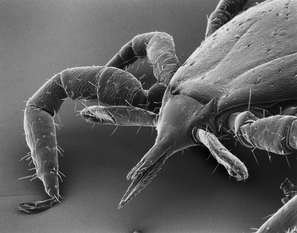
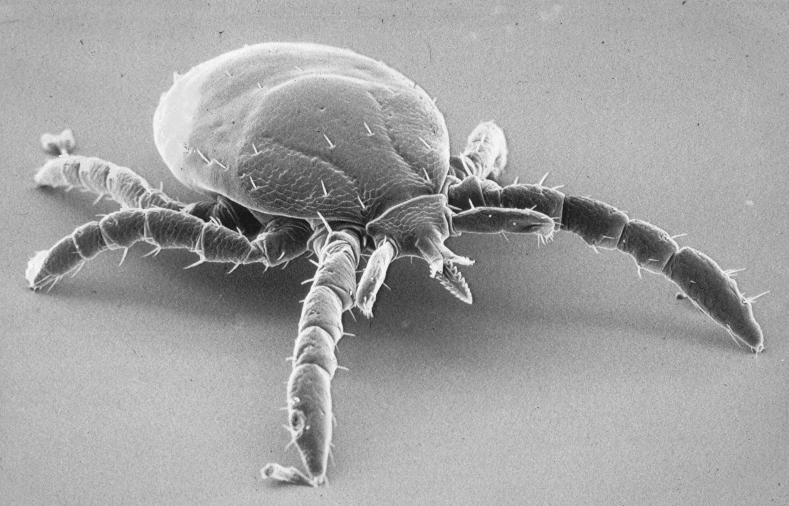
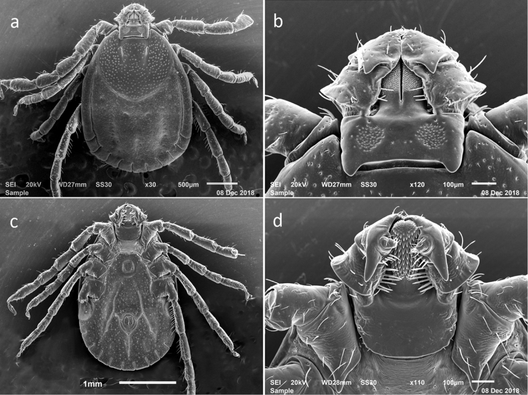
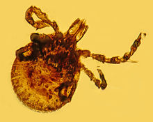

Ticks are classified in the subclass Acari [1] and are highly specialized obligate, bloodsucking, nonpermanent ectoparasitic arthropods that feed on mammals, birds, reptiles, and amphibians in all regions of the earth [2]. Although ticks are distributed from the tropics to subarctic areas, species diversity is greatest in tropical and subtropical regions [1]. Possibly, the earliest published account of their parasitic habits was documented in 1550 BC [3], but it was the seminal discovery of Smith and Kilborne in 1893 [4] that the tick Rhipicephalus (Boophilus) annulatus transmitted the protozoan parasite, Babesia bigemina, during feeding on cattle that provided the key to the true importance of ticks. This discovery established that ticks are not only ectoparasites that can damage human and animal skin but also that ticks are parasites that transmit disease-causing pathogens. Ticks are large-bodied arthropods that feed exclusively on vertebrate blood, lymph, or digested tissues. Molting and reproduction are regulated by temperature, day-length, and ingestion of blood; thousands of eggs can be deposited by individual females. The external body regions are comprised of the capitulum, body, and legs, and there is a specialized hold-fast organ called a hypostome, which is important in the feeding process [1,5,6]. Ticks harm people indirectly by transmitting pathogenic organisms, such as protozoa, viruses, and bacteria, during feeding. Additionally, tick bites may cause tick paralysis, toxicoses, and allergic reactions. This article reviews the biology of ticks, emphasizes important species that feed on people, includes information on how these ectoparasites survive on and off their hosts, and describes their feeding habits, which contribute to their ability to transmit etiologic agents. Further details on tick biology are available in several publications [1,5–14]. Morphology The structure of a tick is fused into two parts, consisting of the capitulum (gnathosoma) and the body (idiosoma), to which the legs are attached (Fig. 1) [1,6]. Larval ticks have six legs (Fig. 2), while nymphs and adults have eight legs (Fig. 3). A distinct head is absent. Unfed adult ticks range in length from 2 mm to 20 mm. Blood-engorged females may be 25 to 30 mm in length and weigh up to 100 times their pre-engorgement weights. The mouthparts are found on the capitulum (Figs. 4 and 5). They include the two four-segmented palps, each of which in ixodid (hard-bodied) ticks has numerous chemosensory sensillae located in the small distal fourth segment (see Fig. 5). The palps do not enter the wound; they are pressed laterally and horizontally against the skin during feeding. The pair of sclerotized, two-segmented tubular chelicerae extends from the basis capituli and is located medially to the palps. Two highly moveable and sharp cutting digits are located at the extremities of the cheliceral shafts (see Figs. 2 and 4). The digits are situated laterally and are used to cut the skin during feeding. The relatively large medially positioned hypostome with ventral, backwardpointing denticles (teeth) on its external surface has its internal surface covered dorsally by the chelicerae and is used as a holdfast organ and food canal (see Fig. 4). The size and shape of the hypostome and arrangement of denticles vary among species and are important features used in identifying species. Blood passes from the host through this food canal, formed by the hypostome ventrally, and by the chelicerae dorsally. Saliva, containing proteolytic enzymes that digest and liquefy tissues, moves from the tick to the host through this channel. The basis capituli, the basal portion of the capitulum, is attached to the tick body by a flexible membrane. Fig. 1. Scanning electron micrograph of a dorsal–lateral view of an Ixodes scapularis female. B, body (idiosoma); C, capitulum (gnathosoma); L, leg; P, palp; S, scutum; SP, spiracle. Measurement bar ¼ 500 mm.197 BIOLOGY OF TICKS Fig. 2. Scanning electron micrograph of the ventral morphology of an Ixodes scapularis larva. A, anus; BC, basis capituli; D, digits of a chelicera; H, external surface of the hypostome; L, leg; P, palp. Measurement bar ¼ 500 mm. The body is posterior to the capitulum (see Figs. 1 and 3). The anterior part bears the legs and genital pore, and the posterior part possesses the spiracles and anus. The genital aperture is closed and unapparent in larvae and nymphs and open in adults (compare Fig. 2 with Fig. 3). In the hard-bodied Fig. 3. Scanning electron micrograph of the ventral morphology of an Ixodes scapularis female. A, anus; BC, basis capituli; GA, genital aperture; H, external surface of the hypostome; L, leg; P, palp; SP, spiracle. Measurement bar ¼ 500 mm.198 ANDERSON & MAGNARELLI Fig. 4. Scanning electron micrograph of the dorsal morphology of the capitulum of an adult female Ixodes scapularis. BC, basis capituli; D, digits of a chelicera; DEN, denticle of the external surface of the hypostome; H, internal surface of the hypostome; O, opening to the food channel; P, palp; PA, porose area; SC, shaft of a chelicera. Measurement bar ¼ 500 mm. ticks, a hardened shield, the scutum, covers the dorsal anterior portion of the body of female and juvenile ticks (see Fig. 1). In males, the scutum covers the entire body. During feeding, the cuticle, with the exception of the scutum, expands to accommodate the ingested blood meal. The body of argasid ticks lacks a scutum and is characterized by a leathery and flexible cuticle (Figs. 6 and 7). The jointed six-segmented legs are used for locomotion. Haller’s organ on the tarsus of the first leg detects temperature, air currents, odors, and chemicals [1,5]. Systematics Ticks are classified in the class Arachnida, subclass Acari, order Parasitiformes, and suborder Ixodida [5]. There are approximately 878 species [15,16], divided into four families, specifically the Argasidae (soft-bodied ticks), Ixodidae (hard-bodied ticks), Nutalliellidae, and Laelaptidae (Table 1). The latter two families are of minor importance, and each has but one species.199 BIOLOGY OF TICKS Fig. 5. Scanning electron micrograph of the ventral morphology of the capitulum of a nymphal Ixodes scapularis. BC, basis capituli; F, fourth segment of the palp; H, external surface of the hypostome; P, palp. Measurement bar ¼ 500 mm. The soft-bodied ticks are characterized by having the capitulum positioned subterminally (Fig. 8), except in larvae, which have the capitulum in an anterior position, a highly sculptured leathery integument, and do not have a dorsal shield [5] (see Figs. 6 and 7). All feeding stages of hardbodied ticks have an anterior-positioned capitulum, striate integument, and a scutum (see Figs. 1–3). At least 222 species of approximately 878 known species have been reported to feed on people, but relatively few commonly feed on people [2,17,18]. This article identifies 33 species that the authors judged to commonly feed on people (Table 2). Of these, 28 species harbor and transmit pathogens known to cause human disease. Excellent taxonomic keys to these and other ticks by faunal regions of the world are available [2,19]. Geographic distribution maps of several important species have been published [6,7,20–22]. Water balance Ticks can have a relatively long life [1,6]. Ixodid ticks can live 2 to 6 years, whereas soft-bodied ticks can live as long as 20 years. Long-term survival200 ANDERSON & MAGNARELLI Fig. 6. Scanning electron micrograph of the dorsal view of a female soft-bodied tick (Argas brumpti). (Courtesy of Rocky Mountain Laboratories, US Public Health Service, NIH.) without blood meals is accomplished by preventing desiccation and by relying on stored reserves obtained from a prior feeding. Aside from feeding on vertebrate hosts, ticks do not acquire nutrients from plants. It is not unusual for ticks to live for a year or more, but relatively short periods of time are normally spent on the host. Ixodid ticks such as Ixodes scapularis (blacklegged tick) and Dermacentor variabilis (American dog tick) may spend 98%ormore of their lives off their host animals [23]. Dermacentor albipictus (winter tick) spends comparatively more time on its large mammalian hosts (eg, deer, moose, and cattle). Argasid ticks may spend less time on their hosts. Whether ticks are feeding or fasting, however, maintenance of water balance is crucial for survival, distribution, and activity [24,25]. During the process of ingesting blood, ticks need to prevent overhydration. Conversely, ticks need to prevent dehydration during fasting periods. Water is expelled or retained as needed. During active engorgement, salivary glands of ixodid ticks play an important role in excretion of fluids as large volumes of blood are ingested. Excess ions and water from the blood meal are transported through the gut epithelium into the hemocoel and secreted back to the host during feeding by means of the salivary glands [23]. By contrast, argasid nymphs and adults take several small blood meals intermittently from multiple hosts and remove most of their excess water through the coxal glands during or after the blood meal.201 BIOLOGY OF TICKS Fig. 7. Scanning electron micrograph of the ventral view of a female soft-bodied tick (Argas brumpti). A, anus; C, capitulum; GA, genital aperture. (Courtesy of Rocky Mountain Laboratories, US Public Health Service, NIH.) Table 1 Number of tick species by genus Family Genus Approximate number of species Ixodidae Nuttalliellidae Argasidae Laelaptidae Ixodes Amblyomma Bothriocroton Haemaphysalis Hyalomma Nosomma Anomalohimalaya Cosmiomma Dermacentor Margaropus Rhipicentor Rhipicephalus (Boophilus) Rhipicephalus Nuttalliella Argas Carios Ornithodoros Otobius Gammaridacarus Total 245 131 5 164 24 1 3 1 34 3 2 5 74 1 58 88 35 3 1 878202 ANDERSON & MAGNARELLI Fig. 8. Scanning electron micrograph of the ventral morphology of the capitulum of an adult Argas persicus (soft-bodied tick). C, capitulum; H, external surface of the hypostome; P, palp. Measurement bar ¼ 500 mm. When fasting, the tick must conserve water and maintain water balance. They accomplish this when salivary glands secrete and subsequently imbibe hygroscopic substances that actively absorb water from unsaturated air [26], by having an integument that restricts transpirational water loss, by infrequently opening spiracular valves to prevent water loss from the tracheal system, and by actively moving to nearby microhabitats, which have higher humidity. Feeding Blood meals are needed for survival, growth to the next stage of development, and for reproduction. Feeding involves a complex array of behavioral events that begin with hunger and end in satiation [27]. It is by this means that a tick can harm its host by acquiring pathogenic organisms from an infected host and by subsequently transmitting these agents to other hosts in subsequent blood feedings. The sequence of events leading to successful feeding has been divided into nine major steps 1. Appetence (hunting or seeking a host) 2. Engagement (adherence to the skin or fur of the host) 3. Exploration (searching on the skin for a suitable attachment site) 4. Penetration (insertion of the mouthparts into the host’s epidermis and dermis) 5. Attachment (feeding site established) 6. Ingestion (uptake of blood and other fluids) 7. Engorgement (partial or complete meals of blood taken) 8. Detachment (withdrawal of the mouthparts) 9. Disengagement (tick drops off of the host)203 BIOLOGY OF TICKS Compared with mosquitoes, the relatively slow feeding process in ticks enhances dispersal of these ectoparasites as the host moves about in the environment. For example, larvae and nymphs of Ixodes scapularis often feed on birds and can travel several miles while feeding. Some ticks are carried between continents by birds. Stimuli that induce appetence include odor, vibration, shadowing, and visual appearance. In some species, simple eyes may be located along the lateral or submarginal areas of the scutum. Many tick species lack eyes. Touch, skin and radiant temperatures, and the previously mentioned stimuli lead to engagement. Tactile stimuli, received from the hair-like projections (setae) on the palps or other body parts, are used to select attachment sites on the host’s skin. These sites are often in sheltered locations on the body of the host. Upon penetration, receptors on the chelicerae are used to ‘‘taste’’ the host. The tick grasps the skin surface with its tarsal claws, positions its body at an angle to the skin surface, and begins cutting the epidermis and the dermis with its chelicerae. The hypostome, with its relatively large backward projecting teeth, is inserted into the wound. The addition of a proteinaceous cement-like substance that hardens is secreted by ixodid ticks around the inserted mouthparts, thereby helping to secure attachment. The inner surface of the hypostome forms the ventral portion of the feeding channel, which is covered by the cheliceral sheaths. The feeding channel is used for the intake of tissue fluids from the host and for the injection of saliva into the host from the tick. Ingestion of blood and host tissues by ixodid ticks begins relatively slowly [1,6,28]. In most cases, tick bites in people are painless. Larvae and nymphs feed on average 2.5 to 8 days, whereas adults feed 5 to 12 days. Upon engorgement, most ticks drop off their host. There is little if any increase in weight of the tick during the first 24 hours of feeding. Thereafter, weight increases slowly for several days, followed by a rapid increase in weight on the last day. It is believed that high dosages of the Lyme disease spirochete (Borrelia burgdorferi) are transferred during the later period of feeding when relatively large volumes of blood are ingested [29]. Initial salivary secretions prevent blood clotting, dilate skin capillaries, digest host tissues, cause extensive hemorrhage, and suppress inflammatory responses of the host. Saliva also stimulates the host’s immune system and interacts with the immune effector components [28,30]. There are periods of salivation alternating with ingestion of blood, tissue fluid, or lymph. The relatively slow feeding process in ixodid ticks is associated with the need to produce new cuticle to accommodate the ever increasing volume of blood. Upon completion of feeding, the fertilized fully-fed female may weigh 100 to 120 times its original weight, but because so much water is secreted back into the host, the total volume of blood ingested may be two to three times the amount calculated from the postfeeding weight. Production of antibodies, complement, antigen-presenting cells, and T lymphocytes are host responses to tick feedings [31,32]. Host animals are204 ANDERSON & MAGNARELLI Table 2 Species of ticks reported to feed relatively frequently on people, many with high public health significance Species Etiologic agents causing disease in people Amblyomma americanum Amblyomma cajennense Amblyomma hebraeum Amblyomma variegatum Argas reflexus Carios erraticus Carios rudis Dermacentor andersoni Dermacentor auratus Dermacentor marginatus Dermacentor nuttalli Dermacentor occidentalis Dermacentor reticulatus Dermacentor silvarum Dermacentor variabilis Haemaphysalis concinna Hyalomma anatolicum Hyalomma marginatum Ixodes cookei Ixodes holocyclus Ixodes ovatus Ixodes pacificus Ixodes persulcatus Ixodes ricinus Ixodes scapularis Ornithodoros asperus Ornithodoros coriaceus Ornithodoros hermsi Geographic distribution Eastern United States Texas, Mexico, Central and South America Southern Africa Africa, Caribbean Islands SE Europe, Middle East North and East Africa, Near East, southeastern Europe Panama, South America Western North America India, Malaysia, Vietnam, Burma, China Eurasia Russia, Mongolia, China California, Oregon, Baja Mexico Eurasia Russia, Eastern Europe, Mongolia Eastern and western North America Central Europe, Russia, Far East Russia, southern Europe, Near East Africa, Turkey, Yemen, Israel, Russia North America Australia Japan, China, Tibet, Burma, Nepal Western North America Eurasia Europe Eastern, midwestern North America Caucasus, Iraq California, Mexico Western North America E chaffeensis, B lonestari, F tularensis R rickettsii R africae CCHFV None reported B crocidurae, B hispanica B venezuelensis R rickettsii, CTFV, F tularensis None reported C burnetti, R slovaca, R sibirica, TBEV, OHFV R sibirica, F tularensis R rickettsii, C burnetti, F tularensis, CTFV R conorii, R sibirica, F tularensis, OHFV TBEV R rickettsii, F tularensis TBEV CCHFV CCHFV POWV R australis None reported B burgdorferi, An phagocytophilum, Babesia spp B spp, TBEV B spp, R conori, An phagocytophilum, Babesia divergens, TBEV, CCHFV B burgdorferi, An phagocytophilum, Babesia microti B caucasica None reported B hermsii205 BIOLOGY OF TICKS Table 2 (continued) Species Geographic distribution Etiologic agents causing disease in people Ornithodoros moubata Ornithodoros savignyi Ornithodoros tartakovskyi Ornithodoros turicata Rhipicephalus sanguineus Eastern, central, southern Africa Africa, Arabia, India, Sri Lanka Central Asia Mexico, Central America, southwest United States Cosmopolitan B duttoni None reported B latyschewii B turicatae R conori Abbreviations:An,Anaplasma;B,Borrelia;CCHFV,CrimeanCongohemorrhagicfevervirus; C, Coxiella; CTFV, Colorado tick fever virus; E, Ehrlichia; OHFV, Omsk hemorrhagic fever virus; POWV,Powassanvirus; R,Rickettsia; F, Francisella; TBEV, tick-borne encephalitis virus. often unable to resist initial tick feeding, but many hosts develop an immune response to repeated tick exposures. Acquired resistance may be expressed by reduced blood ingestion, decreased weight, prolonged feeding, production of fewer viable eggs, inhibition of molting, and death. Some animals, such as the white-footed mouse, do not mount immune responses to tick bites from Ixodes scapularis. It is hypothesized that Ixodes scapularis produces numerous salivary antagonists to evade the host’s repertoire of immune antagonists [33]. The feeding process of soft-bodied ticks is relatively rapid compared with hard-bodied ticks [1,6]. Soft-bodied ticks commence feeding on blood almost immediately upon attachment, do not secrete cement, do not form new cuticle, and secrete excess water through their coxal pores. Larval ticks may feed to completion within 20 minutes of attachment, whereas adults complete feeding in 35 to 70 minutes. Pheromones Pheromones, natural chemicals released by and influencing behavior of individuals of the same species, are important in the ecology and survival of specific tick species. At least three important categories of tick pheromones have been identified [5,34–36]. These include assembly pheromones, which induce free-living hard-bodied and soft-bodied ticks to cluster in the field. Assemblies of ticks tend to occur in sheltered areas such as caves, ledges, cracks, crevices, and sites frequented by hosts. These chemicals are thought to facilitate mating and host finding and to enhance survival by concentrating populations in microhabitats conducive for survival. The second category is the aggregation and attachment pheromones, which attract ticks to specific feeding locations on the host where male ticks are attached and feeding. This pheromone has been described from several different species of Amblyomma that feed on large ungulates in North America and southern Africa. Females of these species tend not to attach to animals unless males of the same species are already present and feeding. The third206 ANDERSON & MAGNARELLI category is the sex pheromone, which facilitates mating and involves more than one chemical-attracting compound. For example, a feeding female Dermacentor variabilis secretes her sex attractant pheromone, exciting a nearby feeding male to detach from the host, commence searching, orientating, approaching, and mating. At least three types of pheromones are involved in the mating process. Following mating, the male remains on the skin of the host, and after several days of feeding, it again is ready to mate with another attached female. Natural history All hard-bodied and soft-bodied ticks have relatively complex life cycles [1,6]. Stages of development of argasid ticks include egg; a six-legged larva; eight-legged nymphs, of which there may be as many as eight instars; and eight-legged male and female adults. Stages of development of ixodid ticks include egg, a six-legged larva, one eight-legged nymphal instar, and eightlegged male and female adults. Blood meals, with a few exceptions, are needed for development of the larvae and nymphs to the next stage of development and for reproduction in the adult stage. In many instances, pathogens acquired by larval feedings are passed to the subsequent life stages, a phenomenon known as trans-stadial transmission. For example, the etiologic agents for Lyme disease, human babesiosis, and Rocky Mountain spotted fever are carried from one feeding stage to another. The duration and phenology of the different motile life stages vary with geographic location, relationship to hosts, and the environmental conditions, including the number of hours of daylight to which ticks are exposed. Ticks may be classified as nest-dwelling (nidicolous) parasites or as fielddwelling (non-nidicolous) parasites [1]. Almost all soft-bodied argasid ticks and some hard-bodied ticks, such as those belonging to the genus Ixodes, are nidicolous parasites. These ticks infest caves, nests, rock ledges, crevices, or burrows, or hide in soil or cracks or crevices of tree bark or wood nearby host-occupied sheltered sites. Almost the entire life of the tick on and off its host may be spent in these sheltered environments. The nest environment provides ideal conditions for tick development off the host, reproduction, sustenance for the various feeding stages, and a high probability of host presence. Environments in these often darkened sites tend to have relatively stable microclimates (temperature, relative humidity, and wind) that are more uniform throughout the year than those in open fields and forest. Behaviors, including host specificity and relatively narrow humidity and temperature tolerances, restrict many species to specific habitats. Most species are found in the tropics and subtropics, with fewer species being found in higher latitudes. Host specificity, which can occur at the generic or species level, varies, with members of some species feeding almost exclusively on bats, to other species that feed almost on any host it encounters (ie,207 BIOLOGY OF TICKS Ornithodoros erraticus). Soft-bodied ticks are able to fast for months or even years. Many argasid species do not come into frequent contact with and feed on people because of their survival requirements in specialized habitats. One species, however, Ornithodoros moubata, lives in human dwellings. Other argasid species may be encountered when people intrude into caves, nesting sites, and large burrows, or when people cohabit with tick-infested birds and rodents. People visiting islands inhabited by California gulls that are infested with Argas monolakensis may be attacked by this argasid [37]. In Peru, people cohabiting with chickens or wild birds infested with Argas moreli in their houses were parasitized by this tick [38]. In Europe, Argas reflexus, Argas plonicus, and Argas vulgaris were reported to feed on people when pigeons were removed from buildings [16]. Ticks leave their nests because of the absence of normal hosts and often will feed on the first available host encountered. Bat-feeding species, such as Argas brumpti and Carios vespertilionis, have bitten people in homes infested with bats or when people slept in caves [18,39]. The eyeless tampan, Ornithodoros moubata, the only known vector of the spirochete Borrelia duttoni, feeds on and lives in close proximity with people residing in arid sub-Saharan Africa [40,41]. Dwellings with a central heating f ire, where temperatures of approximately 22C and a relative humidity of approximately 84% are maintained, are conducive for tick survival. Shelter is provided for egg deposition and all feeding stages in cracks in clay or mud within each infested dwelling. A generation is completed in 2.5 months or longer. Anonfeeding larvahatchesfromaneggandsoonmoltsintoanymph. There are five to six instars, each sustained by a separate human blood meal. Males and females both feed on people. Females may feed up to six times, often laying a batch of 10 to 20 eggs after each feeding. Ticks are dispersed among homes by being carried in clothing, sleeping mats, or baskets. Another important argasid tick vector, Ornithodoros sonrai, lives in close proximity to people, particularly during drought conditions in West Africa [42,43]. It feeds on rodents and insectivores and transmits the spirochete Borrelia crocidurae. The tick, in essence, cohabits with people by living in nests of its rodent and insectivore hosts, which burrow into the earthen f loors of bedrooms and other rooms of dwellings, built with mud walls and thatched roofs. The immature and adult stages of Ornithodoros sonrai leave the burrows of their natural small animal host at night and feed on sleeping people. In the New World, Borrelia-infected soft-bodied ticks mainly feed on people in mountainous portions of the western United States and southern British Columbia, Canada, the flat lands of Kansas south to Texas, and the plateau areas in Mexico, Central America, and South America. In mountainous areas at elevations of 1500 to 8000 ft, people acquire infected tick bites in residences, cabins, and cottages inhabited or formerly inhabited by rodents (ground squirrels, tree squirrels, and chipmunks) infested with208 ANDERSON & MAGNARELLI Ornithodoros hermsi, which is associated with rodent nests [44–46]. Infected juvenile and adult ticks may leave their rodent nests in dwellings and feed on sleeping people. Ornithodoros turicata occurs most abundantly in relatively dry environments from Kansas south to central Mexico and west to California. This tick is associated with various animals including cattle, ground squirrels, prairie dogs, gopher tortoises, and snakes [44]. People usually are parasitized while visiting limestone caves in Texas [47]. The field-dwelling hard-bodied ticks may be found in forests, savannahs, scrub, moorlands,pastures, meadows, brush, and evendeserts.Theseare species that have limited tolerance to desiccation but compensate by moving vertically on vegetation according to their humidity and host needs and having the ability to absorb moisture directly from the air. These ticks alternate parasitic with free-living lives with one or more host animals. The tick initially feeds as a larva, again as a nymph, and then finally as an adult, although some males do not ingest blood. Each generation may be 1 or 2 years, although some species may take 3 to 6 years to complete a generation. Life cycles of hard-bodied ticks are classified according to the number of times the three feeding stages change hosts and whether juvenile ticks molt on or off their hosts. Accordingly, species are classified as one-host, twohost, or three-host ticks [1,6]. Most ixodid species, such as Dermacentor variabilis, Ixodes ricinus, and Ixodes scapularis, feed three times on three different hosts and commonly are referred to as three-host ticks. In general, ticks remain on their host animals only while feeding, although some spend time crawling. These ticks feed to completion as larvae, drop off their host to the ground, and molt into nymphs. Nymphs attach to another host animal, feed to completion, and drop to the ground. After molting into adults, each female attaches to a host, mates, completes engorgement, and drops to the ground, where in time she lays a batch of eggs. It is not uncommon for a female to deposit 3000 or more eggs. A few species are referred to as one-host or two-host ticks. Rhipicephalus (Boophilus) microplus is a one host tick. Larvae and nymphs feed and molt on cattle with only the engorged and mated female dropping off the host and onto the ground to lay eggs. Rhipicephalus bursa is an example of a two-host species. The larvae feed and molt to nymphs on sheep. Following engorgement, nymphs detach, fall to the ground, and molt into adults. Adults seek a new host, mate, feed to completion, detach, and then fall to the ground to later lay eggs. Ticks have different ways of finding hosts [6]. For example, most fielddwelling species, such as Ixodes scapularis and Dermacentor variabilis, congregate along animal trails, rest on vegetation and wait for appropriate hosts to brush against the questing tick. Unfed ticks detect approaching hosts by vibration, heat, shadow, odor, or carbon dioxide. Ticks cling to the host animal upon contact. In nests or other environmental settings, where ticks are close to their hosts, these ectoparasites can crawl to the host. Active or hunting behavior is apparent in a few ticks, such as the camel tick, Hyalomma dromedarii, in desert habitats. These ticks remain buried in209 BIOLOGY OF TICKS the sand or duff for protection from desiccation. They rapidly emerge from the sand when odors from a host are detected and run across the sand to cling to a nearby animal. The vertical distribution of questing ticks determines in part the type of host encountered. Adults positioned near the tips of grass or on brush likely will encounter relatively large animals, whereas larvae and nymphs questing close to the ground will encounter small mammals, birds, or lizards [6]. Ticks on the higher portions of plants may stay in position for several hours but often have to descend to replenish water reserves. Although there is wide variation in host selection patterns, most ticks restrict their feeding to relatively few hosts, particularly nest-dwelling Ixodes ticks, such as Ixodes texanus and many argasid ticks. Ixodes texanus feeds almost exclusively on raccoons. However, other tick species that feed in the open also may be relatively host-specific. Two examples are Rhipicephalus (Boophilus) microplus, which feeds almost exclusively on cattle or other ungulates, and Dermacentor albipictus, which is found most commonly on deer, moose, and elk, and on domestic ungulates [6]. Other tick species feed on various hosts, with the adult stages most commonly found only on medium-to-large-sized mammals. Ixodes scapularis and Ixodes pacificus are known to feed on more than 100 hosts in North America, and Ixodes ricinus and Ixodes persulcatus are known to feed on more than 200 hosts in Eurasia [21,48]. Although feeding on many different hosts, each of these four species tends to prefer certain host species over others. The following section reviews the salient aspects of the biology of these four major vectors of borreliae that cause human disease in the United States and Eurasia. Ixodes scapularis is distributed in the eastern half of the United States and southeastern Canada. Two years usually are taken to complete a generation in the northern United States. Eggs, numbering 1000 to 2000, are laid in a single cluster in the duff area of the soil during spring and hatch in August and early September. Larvae quest near the ground, where the relative humidity is higher, and will parasitize rodents, birds, and even white-tailed deer during late summer and early fall. Feeding lasts 3 to 5 days on average, with the engorged larvae dropping to the ground and molting into nymphs in the duff area or rodent burrows the following spring. Similarly, nymphs seek vertebrate hosts in spring to early summer, feed for 3 to 5 days, detach, drop to the ground, and then molt into adults in mid-October and early November. Mating (Fig. 9) may occur on vegetation but is much more commononthe host animal. After feeding for 5 to 7 days on white-tailed deer or other large mammalian hosts in the fall and early winter or the following spring, engorged mated females detach, drop off the host onto the ground, and make their way to the duff area to develop and lay eggs. Ixodes scapularis has been recorded feeding on more species of hosts than any other North American tick [49]. As a juvenile, it is known to feed on at least 52 different species of mammals, 60 species of birds, and 8 species of reptiles. In contrast to larvae and nymphs, which feed on small and large210 ANDERSON & MAGNARELLI Fig. 9. Scanning electron micrograph of a male and a female of Ixodes scapularis mating. The smaller tick on top is a male and has its mouthparts inserted into the genital aperture of the female. Mating may take place off or on the host. Measurement bar ¼ 500 mm. animals, adults restrict their feeding to medium to large mammals. Ixodes scapularis has a predilection for white-footed mice in the larval and nymphal stages, while white-tailed deer are preferred hosts for the adults. Ixodes pacificus is the important vector of the Lyme disease-causing borreliae in western United States. It ranges from California northward along the Pacific Ocean to southern British Columbia, Canada, with infestations in the inland states of Idaho, Nevada, and Utah [50]. This tick feeds extensively on Columbian black-tailed deer and other medium to large mammals, such as bear, horses, and dogs, as an adult, and on small mammals, birds, and lizards in the larval and nymphal stages. It normally completes its life cycle in 3 years [51]. Larval ticks reach peak activity during spring several weeks before that of nymphal ticks, although overlap of the two stages occurs. Adults are most active in the winter. The sheep tick, Ixodes ricinus, is an important species that occurs in a vast area of Eurasia within 39 to 65 north latitude and extending from Great Britain easterly to 50 to 55 longitude, where it overlaps with Ixodes persulcatus [22,52,53]. It has been recorded from at least 237 different species of birds, mammals, and lizards [48]. Larvae and nymphs feed on small and large mammals, lizards, and ground-inhabiting birds, but adults feed only on large mammals, such as deer and livestock. Apparently, each feeding stage takes about 1 year to develop to the next stage. Development is governed by the number of hours of light per day, temperature, and availability of hosts. The generation time is often 3 years, although it can vary from 2 to 6 years depending upon the habitat [52]. This species requires a relative humidity of 80% or greater for survival and, thus, tends to be restricted to leaf litter and low-growing vegetation in deciduous and mixed woodlands. In high rainfall areas, it also is found in coniferous forests and open pastures. Immature and adult stages seek hosts from about February211 BIOLOGY OF TICKS to November. Their feeding pattern is bimodal, with host seeking greater in spring than in autumn [52]. Ixodes persulcatus replaces Ixodes ricinus in northeastern Europe and extends across northern Asia to Japan [52]. Habitats include boreal coniferous, deciduous, and mixed forests. At least 212 host species (mammals, birds, and lizards) have been identified [48]. Larvae and nymphs are active primarily at night and climb to the tips of low-growing vegetation and attach to and feed on small mammals such as voles and shrews and on ground-inhabiting birds. Adults feed on large wild and domestic mammals [8,54]. Hares often are parasitized extensively by all three feeding stages. A generation may take to 2 to 6 years to complete but is most often 3 years [1]. The seasonality of the various feeding stages is complex but basically is similar to Ixodes ricinus [1,52]. In China, nymphal Ixodes persulcatus have a single peak of activity in May and June that precedes the first of two peak feeding periods for larvae in June and July and an autumn peak in September and October [55]. The first tick described in the United States was the field-dwelling lone star tick, Amblyomma americanum, a vector of Borrelia lonestari [56], the likely etiologic agent of southern tick-associated rash illness [57]. This species is most abundant in the southeastern United States, but is found as far west as west-central Texas and as far north as Maine. Larvae and nymphs feed on small, medium, and large mammals, although larger mammals are preferred, and on birds. Adults parasitize primarily white-tailed deer and cattle [58]. Highest numbers are found in brushy vegetation, which has a relatively high humidity. Female ticks reach peak activity in early June and continue feeding into August. Nymphs feed from March to October. Larvae begin feeding in late June, peak in late July, and continue to seek hosts into mid-November. All stages feed on people. Dermacentor variabilis is another important field-dwelling three-host tick and is the primary vector of Rickettsia rickettsii in the eastern United States. Differences in its seasonal activity patterns relative to varying climatic conditions result in a generation taking 1 year in the southeastern United States [6] and 2 years in Nova Scotia, Canada [59]. Day-length and temperature control the developmental patterns in the two geographic areas. In the north, larvae quest in late May and early June, while nymphs are most active in late June and early July. Nymphs molt into adults during late summer, but adults do not seek hosts until the following May and June. Engorged females detach and lay eggs on the ground. Larvae hatching from eggs enter diapause (dormancy), survive in the duff layer of soil, and do not quest until the following spring. In the southern United States, Dermacentor variabilis overwinters as unfed larvae, and after feeding on small mammals in early spring, molt into nymphs during spring. Nymphs also feed on small mammals, drop off hosts, and molt into adults in late spring and summer. Adults then mate on medium-sized mammals, such as raccoons and dogs. Engorged females subsequently detach and drop to212 ANDERSON & MAGNARELLI the ground. The eggs are deposited in a single batch, usually during the summer. Hatching occurs in late summer, and larvae enter diapause. Summary Although the natural history of ticks varies considerably among species, there are numerous biological characteristics associated with these persistent blood suckers that increase the potential for pathogen transmission. In many instances, the immature stages feed on a wide range of hosts, thereby increasing the chances for acquiring and transmitting a disease-causing organism. Once finally attached to hosts, ticks often are unnoticed by the hosts and not easily dislodged. The success rate for complete feedings is high. Reproductive potential in ticks is also high, and in some cases, pathogens like the agent that causes Rocky Mountain spotted fever can be passed from the infected female to the next generation by means of the eggs. Moreover, many tick species are difficult to control, because they live in close association with vertebrate hosts or occur in areas that are not easily accessible for pesticide applications. Also, there are relatively few natural enemies. Finally, habitat changes can have impact. The return of forests from agricultural lands in northeastern United States, the corresponding increase in white-tailed deer, white-footed mice, and other hosts, and the increased activities of people entering in or living near tick-infested areas elevate the risks for tick-borne infections, such as Lyme disease, granulocytic anaplasmosis, human monocytic ehrlichiosis, human babesiosis, Rocky Mountain spotted fever, and tularemia.